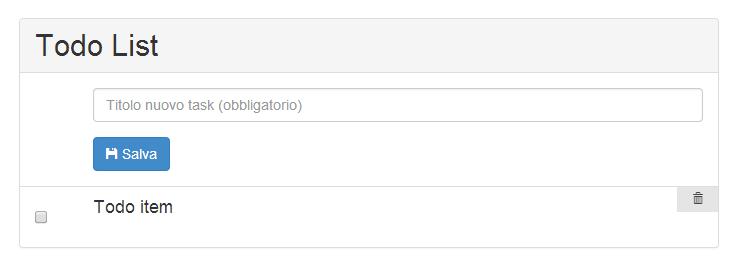

Introducing
Marco Solazzi @dwightjack
Cos'è AngularJS?
“AngularJS is a structural framework for dynamic web apps. It lets you use HTML as your template language and lets you extend HTML's syntax to express your application's components clearly and succinctly.”
- Sviluppato a partire dal 2009 by Miško Hevery and Adam Abrons
- Rilasciato da Google con licenza open-source nel 2010
- Attualmente alla versione 1.2.16
Yet another MV* Framework?!
Perché?
- ☠ i test... questi sconosciuti
- ☠ troppo codice boilerplate per configurare e inizializzare
- ☠ string templating sucks
- ☠ le view imperative non hanno controllo su cosa è cambiato
Soluzioni
✌ Test-first
- Unit test con Karma + Jasmine
- E2E test con Protractor
-
✌ MVVM, Data Binding e Dependency Injection
- Models talk to Views talk to Models
- Addio agli event listeners
- Semplificazione contro sovra-ingegnerizzazione
✌ Templating basato sul DOM
- Si aggiorna solo ciò che serve quando serve
✌ View dichiarative
- Estensione dell'HTML
- Si utilizzano classi e attributi per definire nuove interazioni
ma soprattutto...
✌ No need for magic
Dirty checking
Observe Objects
Inheritance
The dark side
- Model ridotto all'osso
- Utility limitate
- SEO ???
- Crappy-code prone
Learning curve?

Today demo

Stack
- AngularJS
- Bootstrap
- jQuery
- Grunt + Bower
Let's code!
git clone https://github.com/dwightjack/angular-todolist.git